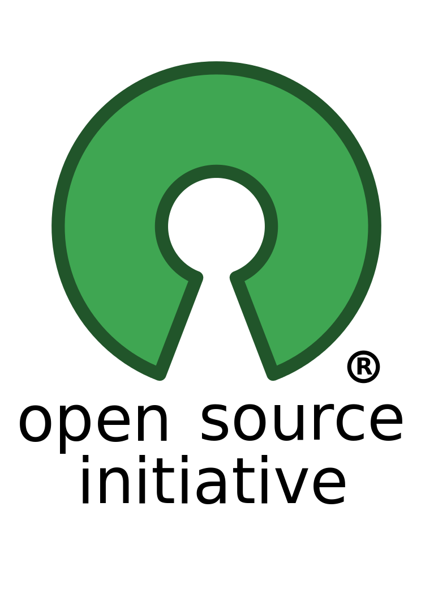

오픈 소스는 소프트웨어 혹은 하드웨어의 제작자의 권리를 지키면서 원시 코드를 누구나 열람할 수 있도록 한 소프트웨어 혹은 오픈 소스 라이선스에 준하는 모든 통칭을 일컫는다.오픈 소스(open
source, 문화어: 공개원천)는 소프트웨어 혹은 하드웨어의 제작자의 권리를 지키면서 원시 코드를 누구나 열람할 수 있도록 한 소프트웨어 혹은 오픈 소스 라이선스에 준하는 모든 통칭을 일컫는다.
오픈소스 소프트웨어란 무엇인가?

오픈소스 소프트웨어란, 소프트웨어와 소스코드(원시코드)가 공개되어있어서 누구나 열람할 수 있고 수정할 수 있고, 그렇기에 누구나 향상시킬 수 있는 소프트웨어를 지칭한다.
다른 소프트웨어와의 차이점
우리가 살펴볼 오픈소스 소프 트웨어는 전술한 소프트웨어와는 대척점에 있는 소프트웨어로서,
소스코드를 보고자 하는 어떤 사람에게든 공개되어 있을뿐더러,
복사, 공부, 변경, 공유가 자유롭게 허용되어있는 소프트웨어이다.
이러한 특성 때문에 유지, 보수는 경직된 특정한 단체가 주관하는 것이 아닌
그 소프트웨어를 유지, 보수하길 원하는 개발자들이 자발적으로 모여 유연한 팀을 이루어 유지, 보수하는 경우가 많다.